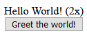
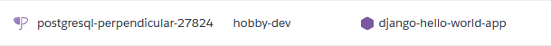

Most Django apps store and work with data, e.g., entered by users. Django supports multiple relational databases for persistent storage of such data out of the box. In this blog post, I show how to a database to a Django app. For local development, I use the default SQLite database and for production deployment on Heroku, I use PostgreSQL® 1.
I use the Django “Hello World” App as simple example. I add a button that users can click to say “Hello World!” and count how often it was clicked. The number of clicks is stored in a database and displayed in the app.
The whole process is very simple as Django does most of the work in the background: Creating the database, making the queries, etc.
Requirements
- A Django app. For example, the Django “Hello World” App.
- GitHub repository. This blog post corresponds to release v1.2.
- Initial blog post on building and deploying the Django app on Heroku
- For automated deployment, a free Heroku and GitHub account.
Defining a Model
Django defines types of data as models. Instances of these models are then saved in a database, where the attributes correspond to the database table’s columns and the instances to the rows.
In this example, I just want to save the value of a counter. I define a counter by a name (in case I want to distinguish multiple counters) and a value in helloworld/models.py:
from django.db import models
class Counter(models.Model):
name = models.CharField(max_length=100)
value = models.IntegerField(default=0)
def __str__(self):
return f"{self.name}: {self.value}"Saving the Model in a Database
When developing locally, Django automatically creates a SQLite db.sqlite3. To save the new model in the database and create or adjust the corresponding database tables, Django offers simple CLI commands:
python manage.py makemigrations
python manage.py migrateThe first command generates the code for making the necessary adjustments to the database. This code is stored in helloworld/migrations and should be committed to git. The second command then applies the adjustments to the database.
Using the Model in the Django App
To integrate the model into the “Hello World” app, I first create a view that handles the interaction with the model. In helloworld/views.py:
from django.shortcuts import render
from .models import Counter
def index(request):
# retriever counter model instance from DB or create it if it doesn't exist yet
counter, created = Counter.objects.get_or_create(name='hello-world-button')
# increment counter when a POST request arrives (from the button click)
if request.method == 'POST':
counter.value += 1
counter.save()
context = {
'clicks': counter.value,
}
return render(request, 'helloworld/index.html', context)This view replaces the previous TemplateView in the app’s URL settings (helloworld/urls.py):
from django.urls import path
from . import views
app_name = 'helloworld'
urlpatterns = [
# path('', TemplateView.as_view(template_name='helloworld/index.html'), name='index'),
path('', views.index, name='index'),
]Finally, I need to adjust the template to add a button and display the number of times it was clicked (helloworld/templates/helloworld/index.html):
Hello World! ({{ clicks }}x)
<form action="{% url 'helloworld:index' %}" method="post">
{% csrf_token %}
<button type="submit" name="hello-world-button">Greet the world!</button>
</form>When running the app, it should now look like this:

Clicking the button should reload the page and show an increased click count (here, “2x”). The click count should persist even when the app server is restarted or the app is updated.
Of course, this is super slow and just an example for illustrating persistent storage in Django. In production, this should happen asynchronously with some frontend framework.
PostgreSQL® DB on Heroku
The SQLite database used for local development is not suitable for production deployment. To enable persistent storage for my “Hello World” app deployed on Heroku, I use Heroku’s PostgreSQL® database, which is free for such small use cases.
For deployment, Heroku uses by default a free PostgreSQL® database. This database is automatically created when initially setting up the Django app on Heroku. The available databases on Heroku are listed in the Heroku data dashboard.

If a database is already listed for the Django app, then persistent storage should work out of the box for the app once it is deployed.
What Next?
Small example apps I built with Django and deployed on Heroku, using persistent storage:
- Quotify: An example app showing inspirational quotes. [Code] [App]
- Ideally: Organize & Grow Your Ideas. [Code] [App]
- FeelYa: The app that gets you! [Code] [App]
Other blog posts:
Footnotes
Postgres, PostgreSQL and the Slonik Logo are trademarks or registered trademarks of the PostgreSQL Community Association of Canada, and used with their permission.↩︎